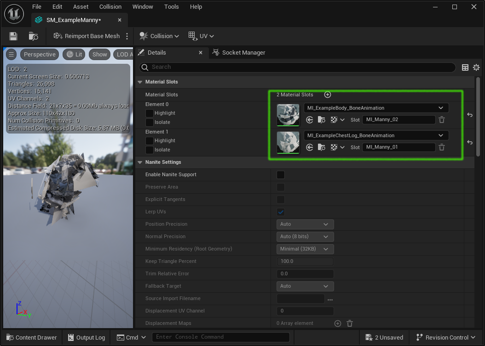

Understanding Animation Textures
Animation Textures is a technique for storing animation data in a texture and then having a material apply that texture to a static mesh and by doing so animate the mesh.
This technique is typically used for animating large numbers of background characters with minimal overhead. It's used in the Epic Games City Sample to animate the crowds walking around the city. If you open the City Sample and play the MassCrowd map you will see a scene like this in which animation textures are used to animate the crowd members:

Unreal 5.4 ships with a plugin called AnimToTexture, this is not enabled by default so you will need to enable it for anything described here to work. There is lots of content on the web about version 5.1 and 5.2 of this AnimToTexture plugin but it changed for version 5.4 and not much has been written about the latest version.
Its all about materials
Unreal Engine implements vertex animation by using materials, material instances and material layers. Its helpful to understand the relationship between these parts:

A skeletal mesh has materials which are specified in its material slots. When a static mesh is created these materials are copied to the material slots of the static mesh, after that the materials on the skeletal mesh are not used. We will be changing the materials associated with a static mesh to ones which support animation textures, i.e. ones which have a material layer which uses the ML_BoneAnimation or ML_VertexAnimation material layers.
The Approach
Vertex animation can be used animate a static mesh either by animating the vertices or by animating the bones. The AnimToTexture plugin supports both. In this article to keep it simple I will only refer to bone animation.
This is a simplified overview of what happens when we create animation textures:

We start with:
- a skeletal mesh
- one or more animations
- a material
- a material instance
The process is controlled by a data asset. We fill in properties of the data asset with the details of the skeletal mesh, the animations and the material files, then we execute the AnimToTexture process to create:
- a static mesh derived from the skeletal mesh
- multiple textures containing animation for bone positions and rotations
- an updated material instance
What is in the AnimToTexture plugin
In addition to the code used to create the animation textures, the plugin contains other useful files. These can be located under the /Engine/Plugins/AnimToTexture directory. This is split into two parts "AnimToTexture Content" and "AnimToTexture C++ Classes", we only ever use the "AnimToTexture Content" part and just refer to it as "AnimToTexture" which is the actual directory name.
If you can't see the /Engine/Plugins/AnimToTexture directory make sure you have the AnimToTexture plugin enabled and in the settings for the content browser (accessed with the button in the top right corner of the content browser window) make sure you have "Show Engine Content" and "Show Plugin Content" enabled.
| Files | Notes |
|---|---|
| Characters/Mannequin/BP_AnimToTexture | the editor utility blueprint which creates the textures |
| Characters/Mannequin/Data/DA_BoneAnimation | example data asset which we will copy and change |
| Characters/Mannequin/Materials/BoneAnimation/M_Body_BoneAnimation | material we will copy |
| Characters/Mannequin/Materials/BoneAnimation/MI_Body_BoneAnimation | material instance we will copy |
| Characters/Mannequin/Textures/BoneAnimation/TX_* | textures we will copy |
| Materials/ML_BoneAnimation | material layer we will copy |
Some of these files have shipped in prior versions of Unreal, and some up to date Unreal example projects contain old versions of these files. For example if you download the City Sample for Unreal 5.4 you will find a version of ML_BoneAnimation in the AnimToTexture plugin (in your engine) and another version in /Content/Crowd/VAT/Materials/ (in the project). These two files are very different - it looks as if the one in the City Sample project is from Unreal Engine 5.2.
Steps
This section outlines the steps to take to (1) create animation textures for a specific static mesh, then (2) create a Niagara system to spawn a lot of animated static meshes, then (3) create a PCG system to spawn a lot of animated static meshes.
Creating the example project
For this example from the launcher (I am using 5.4.3) create a new Game, Third Person, Blueprint, Desktop project with starter content. Call it "VertexAnimation".
Go into Edit | Plugins and enabled the AnimToTexture plugin an restart.
Under the Content directory create a new directory called "Example".
In the content browser settings make sure "Show Plugin Content" and "Show Engine Content" are both enabled.
Creating the data asset
The data asset /Content/Example/DA_ExampleBoneAnimation controls the whole animation texture creation process. The easiest way to make one of the correct structure is to copy the one which ships with the plugin, so:
Copy "Engine/Plugins/AnimToTexture/Characters/Mannequin/Data/DA_BoneAnimation" to our new Example directory. Rename it "DA_ExampleBoneAnimation" and save it.
Creating a static mesh from a skeletal mesh
For the character we will be using Content/Characters/SKM_Manny. Open this asset and click the "Make Static Mesh" button on the top toolbar. Save the static mesh in the Content/Example directory and call it "SM_ExampleManny".
Creating the material instances
Copy /Engine/Plugins/AnimToTexture/Characters/Mannequin/Materials/BoneAnimation/MI_Body_BoneAnimation to the /Content/Example directory and rename it "MI_ExampleBody_BoneAnimation".
Copy /Engine/Plugins/AnimToTexture/Characters/Mannequin/Materials/BoneAnimation/MI_ChestLog_BoneAnimation to the /Content/Example directory and rename it "MI_ExampleChestLog_BoneAnimation".
Open SM_ExampleManny and change the materials to the ones we just created like this:

Creating texture files
The animation texture process populates pre-existing texture files. To get these go to the /Engine/Plugins/AnimToTexture/Characters/Mannequin/Textures/BoneAnimation copy the 3 texture files into /Content/Example and rename them:
- TX_BonePosition to TX_ExampleBonePosition
- TX_BoneRotation to TX_ExampleBoneRotation
- TX_BoneWeight to TX_ExampleBoneWeight
We are renaming all these files to make it clear when we are looking at the data object which file it is referencing and to reduce the risk of overwriting the files which are included in the AnimToTexture plugin.
Populating the data asset
Open the data asset DA_ExampleBoneAnimation. It will be populated with the values from the AnimToTexture plugin like so:

We will be changing all the items in the green boxes.
Change:
- The static mesh to SM_ExampleManny
- The Bone Position Texture to SM_ExampleBonePosition
- The Bone Rotation Texture to SM_ExampleBoneRotation
- The Bone Weight Texture to SM_ExampleBoneWeight
For the purposes of this example we will be usin 3 animations which go in the AnimSequences array.
Replace the 3 existing animations with ones from the /Content/Characters/Mannequins/Animations/Manny directory. Change
- Anim Sequence Index[0] to MM_Run_Fwd
- Anim Sequence Index[1] to MM_Walk_Fwd
- Anim Sequence Index[2] to MM_Idle
The data asset should now look like this:

Configuring the AnimToTexture blueprint
The AnimToTexture blueprint contains the code which creates the animation textures and updates the material instance(s) to use those textures.
We will be editing the AnimToTexture blueprint which comes with the AnimToTextire plugin so we need to make a copy of it.
Copy /Engine/Plugins/AnimToTexture/Characters/Mannequin/BP_AnimToTexture to the /Content/Example directory and rename it "BP_ExampleAnimToTexture".
Open BP_ExampleAnimToTexture and make the following changes:
- delete everything in the "VertexAnimation" box, we only want to do bone animation, so it should look like this:

- delete the VertexDataAsset variable shown:

- click on the BoneDataAsset variable and change the default value to DA_ExampleBoneAnimation:


- click on the first "Update Material Instance from Data Asset" and change the material instance to MI_ExampleBody_BoneAnimation

- click on the second "Update Material Instance from Data Asset" and change the material instance to MI_ExampleChestLog_BoneAnimation

Compile and save BP_ExampleAnimToTexture.
Generating the animation textures
Save everything before doing this step.
Right-click the BP_ExampleAnimToTexture and click "Run Editor Utility Blueprint" as shown here:

This will take a minute or two.
Once it has finished you should see the data asset, materials, and the vertex textures have been updated and need saving.
Checking results
If you open the data asset and expand the Info > Animations section at the bottom you will see something like this:

This shows the animations have been processed and data such as the number of frames, the animation bounding box and the individual animation lengths have been added to the data asset.
If you open the material instance MI_ExampleBody_BoneAnimation and look at the Layer Parameters tab you will see the parameter values have been updated:

Reference
Unreal Engine 5 AnimToTexture Plugin, How to Use it to make Vertex Animation Textures for crowds This is a great video by Kevin Romond based on Unreal 5.2.
UE5 AnimToTexture plug-in This is a translation of an article originally in Japanese